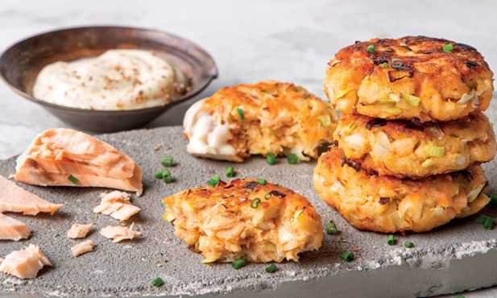

Bolinhos de peixe
Sabia que pode aproveitar as sobras de peixe.
| 2 convidados 30m Entrada Dificuldade baixa | |
|---|---|
| Ingredientes para fazer Bolinhos de peixe | |
|
|
Passos para fazerBolinhos de peixe
1 - Coloque todos os ingredientes numa taça (menos o óleo e a maionese) e misture de forma a lascar o peixe. Quando obtiver uma massa consistente, leve-a ao frigorífico por 10 minutos.
2 - Forme discos pequenos do tamanho de uma colher de sopa e frite-os, no óleo quente, durante 3 minutos de cada lado. Sirva com a maionese.